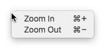

Menu QML Type
A native menu. More...
| Import Statement: | import Qt.labs.platform |
| Inherits: |
Properties
- data : list<QtObject>
- enabled : bool
- font : font
- icon
(since Qt.labs.platform 1.1 (Qt 5.12))- icon.mask : bool
(since Qt.labs.platform 1.1 (Qt 5.12)) - icon.name : string
(since Qt.labs.platform 1.1 (Qt 5.12)) - icon.source : url
(since Qt.labs.platform 1.1 (Qt 5.12))
- icon.mask : bool
- items : list<MenuItem>
- menuBar : MenuBar
- menuItem : MenuItem
- minimumWidth : int
- parentMenu : Menu
- systemTrayIcon : SystemTrayIcon
- title : string
- type : enumeration
- visible : bool
Signals
Methods
- void addItem(MenuItem item)
- void addMenu(Menu submenu)
- void clear()
- void close()
- void insertItem(int index, MenuItem item)
- void insertMenu(int index, Menu submenu)
- void open(MenuItem item)
- void open(Item target, MenuItem item)
- void removeItem(MenuItem item)
- void removeMenu(Menu submenu)
Detailed Description
The Menu type provides a QML API for native platform menu popups.

Menu can be used in a MenuBar, or as a stand-alone context menu. The following example shows how to open a context menu on right mouse click:
MouseArea {
anchors.fill: parent
acceptedButtons: Qt.RightButton
onClicked: zoomMenu.open()
}
Menu {
id: zoomMenu
MenuItem {
text: qsTr("Zoom In")
shortcut: StandardKey.ZoomIn
onTriggered: zoomIn()
}
MenuItem {
text: qsTr("Zoom Out")
shortcut: StandardKey.ZoomOut
onTriggered: zoomOut()
}
}
Submenus
To create submenus, declare a Menu as a child of another Menu:
Menu { title: qsTr("Edit") Menu { title: qsTr("Advanced") MenuItem { text: qsTr("Auto-indent Selection") onTriggered: autoIndentSelection() } MenuItem { text: qsTr("Rewrap Paragraph") onTriggered: rewrapParagraph() } } }
Dynamically generating menu items
You can dynamically generate menu items with Instantiator. The following code shows how you can implement a "Recent Files" submenu, where the items come from a list of files stored in settings:
Menu { title: qsTr("File") Menu { id: recentFilesMenu title: qsTr("Recent Files") enabled: recentFilesInstantiator.count > 0 Instantiator { id: recentFilesInstantiator model: settings.recentFiles delegate: MenuItem { text: settings.displayableFilePath(modelData) onTriggered: loadFile(modelData) } onObjectAdded: (index, object) => recentFilesMenu.insertItem(index, object) onObjectRemoved: (index, object) => recentFilesMenu.removeItem(object) } MenuSeparator {} MenuItem { text: qsTr("Clear Recent Files") onTriggered: settings.clearRecentFiles() } } }
Availability
A native platform menu is currently available on the following platforms:
- macOS
- iOS
- Android
- Linux (only available as a stand-alone context menu when running with the GTK+ platform theme)
The Qt Labs Platform module uses Qt Widgets as a fallback on platforms that do not have a native implementation available. Therefore, applications that use types from the Qt Labs Platform module should link to QtWidgets and use QApplication instead of QGuiApplication.
To link against the QtWidgets library, add the following to your qmake project file:
QT += widgets
Create an instance of QApplication in main():
#include <QApplication> #include <QQmlApplicationEngine> int main(int argc, char *argv[]) { QApplication app(argc, argv); QQmlApplicationEngine engine; engine.load(QUrl(QStringLiteral("qrc:/main.qml"))); return app.exec(); }
Note: Types in Qt.labs modules are not guaranteed to remain compatible in future versions.
See also MenuItem, MenuSeparator, and MenuBar.
Property Documentation
enabled : bool |
This property holds whether the menu is enabled. The default value is true.
This property holds the menu item's icon.
This QML property was introduced in Qt.labs.platform 1.1 (Qt 5.12).
menuBar : MenuBar |
This property holds the menubar that the menu belongs to, or null if the menu is not in a menubar.
menuItem : MenuItem |
This property holds the item that presents the menu (in a parent menu).
minimumWidth : int |
This property holds the minimum width of the menu. The default value is -1 (no minimum width).
parentMenu : Menu |
This property holds the parent menu that the menu belongs to, or null if the menu is not a sub-menu.
systemTrayIcon : SystemTrayIcon |
This property holds the system tray icon that the menu belongs to, or null if the menu is not in a system tray icon.
title : string |
This property holds the menu's title.
type : enumeration |
This property holds the type of the menu.
Available values:
| Constant | Description |
|---|---|
Menu.DefaultMenu | A normal menu (default). |
Menu.EditMenu | An edit menu with pre-populated cut, copy and paste items. |
visible : bool |
This property holds whether the menu is visible. The default value is true.
Signal Documentation
aboutToHide() |
This signal is emitted when the menu is about to be hidden from the user.
Note: The corresponding handler is onAboutToHide.
aboutToShow() |
This signal is emitted when the menu is about to be shown to the user.
Note: The corresponding handler is onAboutToShow.
Method Documentation
void addItem(MenuItem item) |
Adds an item to the end of the menu.
void addMenu(Menu submenu) |
Adds a submenu to the end of the menu.
void clear() |
Removes all items from the menu.
void close() |
Closes the menu.
void open(MenuItem item) |
Opens the menu at the current mouse position, optionally aligned to a menu item.
Opens the menu at the specified target item, optionally aligned to a menu item.
void removeItem(MenuItem item) |
Removes an item from the menu.
void removeMenu(Menu submenu) |
Removes a submenu from the menu.